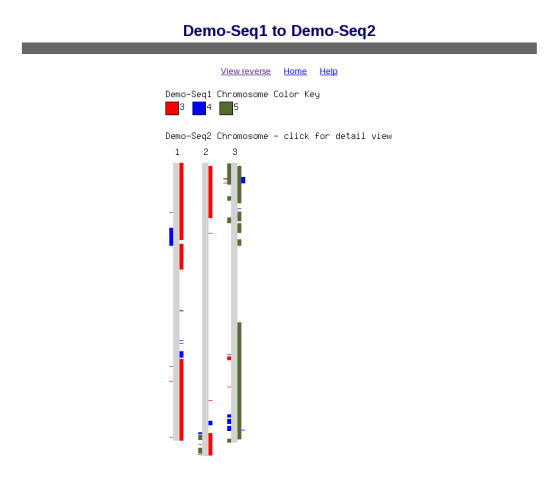
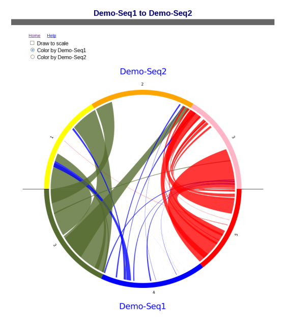

Change into the symap_5 directory.
- If you have mySQL on your machine, then edit symap.config and enter database
and host information (see MySQL).
- If you do not have 3D on your machine,
then enter ./symap
else enter ./symap3D
When this is done,
the Project Manager window opens, shown on the right.
|
|
(Click Images for larger version)
|

|
| |
|
There are four demo projects listed on the left. Check "Demo-Seq" and "Demo-Seq2".
A link "Load All Projects" will be displayed in the top of the right panel; select it to
load the projects, which will take several minutes; when done, the Manager will look as
shown in the image.
In the "Available Syntenies" table, click the cell for the
"Demo_Seq2" row and the "Demo_Seq" column. Then click the
"Selected Pair" button to start the alignment.
|

|
| |
|
The alignment will take about 30 minutes (15 with two CPUs).
When done, the table will have a checkbox, signifying that
the synteny is available for viewing. Click the checked cell,
which will enable the viewing buttons.
|

|
| |
|
Click "Summary" to view the v5 summary shown on the right; there may be slight difference in the number of anchors because the results are slightly different when run when different numbers of CPUs. To view
the other interfaces, see Demo Query.
|

|
Draft genome
The remainder of the demo relates to draft sequence, i.e. unanchored
shotgun sequence. If you are not working with draft sequence,
you can skip to Creating a New Project.
| |
|
Load the Demo-Draft project, following
the same steps used to load the previous two projects.
Under the Demo-Draft listing, you will see
the parameter "Order against: demo_seq". With this setting,
the Demo-Draft contigs will be ordered using synteny to
Demo-Seq, as soon as that alignment is run.
|

|
| |
|
Use the "Selected Pair" button to align Demo-Draft and Demo-Seq,
as before. The alignment will take about 20 minutes.
When done, open the Summary for the pair, as shown on the right; there
may be slight difference in the number of anchors because the results are
slightly different when run when different numbers of CPUs.
The dot plot is shown in Demo-draft.
|

|
| |
|
The ordering on Demo-Draft is in the database only; SyMAP does
not change the sequence files on disk, however,
it writes out ordered sequence files
created from the draft contigs. These are put in the form
of a new SyMAP project which can be loaded and aligned. You
will see this new project in the Projects panel, as shown
at right.
|

|
Further demos:
- There is also Demo-FPC that can be aligned to Demo-Seq
following the same set of steps as described above.
- The section on Self alignments
discusses performing a demo_seq self alignment.
This is the end of the demo.
MySQL and parameters
SyMAP stores all data in a MySQL database.
Pre-packaged MySQL for Linux: The package comes with a
version of MySQL that is suitable for the demo or a small project in order
to try the demo. However, install MySQL for any further work.
The MySQL installation does not need to be on the machine where
you will do the computations or view the results, as long as
it is on an accessible network. Once the server is ready, fill out
the database parameters in the "symap.config" file in the
main SyMAP directory, as described right below.
Note that it is a good idea to have separate
admin and client usernames, where the client has read-only
access. If you set up the web displays, they will use
the client username. The "admin" user needs to have sufficient
permissions to create a new database.
Note that the default settings of MySQL are poorly suited for large-scale
data storage. You will want to adjust the parameters
innodb_buffer_pool_size and innodb_flush_log_at_trx_commit as described in
trouble shooting.
Database Parameters
Parameters for accessing the MySQL database
should be set in the "symap.config" file in the main symap directory, as follows:
|
Database Parameters
|
| db_name |
Name of the MySQL database. SyMAP will create it, if it does not exist yet.
If it does exist, it should either already be a SyMAP database, or it should be empty.
|
| db_server |
The machine hosting the MySQL database, e.g. "myserver.myschool.edu".
|
| db_adminuser |
MySQL username of a user with sufficient privileges to create a database. Needed for
creating and updating alignments.
|
| db_adminpasswd |
Password of the admin user.
|
| db_clientuser |
MySQL username of a user with read-only access. Used in the web displays, if installed, or
if symap is launched with the "-r" parameter.
|
| db_clientpasswd |
Password of the client user.
|
MySQL on the Mac:
Download and install the "MySQL Community Server" from
http://dev.mysql.com/downloads/mysql/.
Also install the Preferences Panel, and use that to start the server.
In symap.config, use
db_name = symap
db_server = localhost
db_adminuser = root
db_adminpasswd =
db_clientuser = root
db_clientpasswd =
For large projects you will want to adjust the parameters as described in
trouble shooting.
Runtime and Memory
The largest component of SyMAP execution time is in running
MUMmer2 (or BLAT1). The typical runtime is one CPU-hour per
target sequence (or group of chromosomes, since SyMAP
will group shorter sequences together for efficiency).
For example, to align rice (12 chromosomes, 370Mb) to maize (10 chromosomes, 2Gb)
required 1 hour, 3 minutes using 8 CPUs
with 2.3Ghz speed. SyMAP used one CPU per maize chromosome to align the enter rice chromosome
against each of the 10 maize chromosomes (i.e. used 10 CPUs).
The memory usage of MUMmer is typically 5G per CPU, however it can
be as high as 10G for very long or repetitive chromosomes.
Start symap (i.e. ./symap). All projects listed under /data/fpc are FPC projects
and all projects listed under /data/seq are Sequence projects (options 1 or 2).
These sub-directories of /data/fpc and /data/seq will be listed on the
left panel under Projects. You may create the project as discussed in Directory
structure, or you may create a new project via the SyMAP interface.
|
To create a new project via the SyMAP interface, press the "Add Project" button
at the lower left. Enter the name and type ("sequence" or "fpc") of the project. The Help
button on the dialog provides further information.
|

| |
After saving the new project, it appears in the Projects list on the left, but
it is still an empty shell. A directory will be made under the /data/seq
for type "sequence, or /data/fpc for type "fpc"; e.g. for the project added
on the right, a directory will be created called /data/seq/foobar.
Check its box and it will appear in the Summary
section (right hand side) .
|

|
Parameters
|
Click the parameter link to open the Parameters window shown in the image on the right.
On the Parameters window you will add the filenames for the sequences and annotations for the project,
as well as setting other parameters if desired. The Help button on this window
provides the necessary details.
Defaults: If the annotations are put in the sub-directory /annotations and
the sequences are put in the subdirectory /sequence, it is not necessary to enter where
the annotations and sequences exist, e.g. the default directories for the project foobar
are as follows:
/data/seq/foobar/annotations
/data/seq/foobar/sequences
After setting the parameters, the project is ready to be loaded and aligned using
the same steps as in the demos.
| 
|
|
The Alignment & Synteny parameters can be changed by clicking the "Parameters"
button, which brings up with window shown on the right.
These parameters generally do not need to be changed.
See the "Help" for a description of the parameters and the difference between
setting the Global parameters and the parameters for a selected pair.
Blat is the alignment program for FPC to Seq.
The Mummer program PROmer is the default program
for sequence alignments for different genomes. The Mummer program NUCmer is the default program
for sequence self-alignments.
| 
|
Preparing the Sequences
The first decision with whole-genome sequence is whether or not to apply
repeat masking. Masking reduces alignment time and false-positive hits,
but also runs a risk of concealing true hits due to inaccurate masking.
Masking also requires considerable time unless you obtain masked sequences
from NCBI or Ensembl.
Masking is not really necessary unless the genome is highly repetitive
and those repeats are shared with other genomes being aligned.
(Repeats cause particular trouble for self-alignments,
see self-alignments in SyMAP).
Another masking option which is available if you have gene
annotation is to mask out everything but the annotated genes. You
can enable the "mask_genes" option on the Parameters window
for your project (turn it on before doing
the alignments).
Note that sequence files should be in FASTA format and the name of a sequence
is the string immediately following the ">", e.g.
>chr3 oryza sativa
GAATTCGAATTTGGGTAATGCTAATCAATACAGGTCAAAATCTATGTATTGAGTGGAATATACTGCAAAGTAATTACCTT
CTTCCAAAGGAAAGCATTCCTTCTCTCTTGTGGGACTAGCAGATGATCTCGCAGCCAAGACGTGACCACCCAAGGCTCAC
...
In this example, the sequence name is "chr3" and the chr3 sequence follows. The additional information
"oryza sativa" is ignored.
Three things are important in naming sequences for SyMAP:
|
A.
|
Sequence names can contain only letters, numbers, and underscores.
|
|
B.
|
The sequence names must exactly match those
used in the annotation files (first column), or the
annotations will not be loaded.
|
|
C.
|
Use a consistent prefix such as "chr" for all sequences, followed
by a short number; set 'grp_prefix' in the parameters window to the prefix.
If there is not a consistent prefix, you may leave the 'grp_prefix' blank;
beware, this can have unintended results, so should be avoided if possible.
|
Annotation files
Annotation files should be in
gff3 format.
The first column (seqid) must exactly match the sequence names in
the fasta files. The third column (type) determines how SyMAP
uses the entry. Types "gene", "exon", "CDS", "centromere", and "gap"
are recognized (other entries are ignored). "CDS" and "exon" are
treated equivalently in SyMAP.
The last column (attributes) contains "tag=value" pairs describing
the annotation. You can set which attributes to use, or use all
those occurring more than a certain number of times (open the
Parameters window for the project, look for parameter "annot_keywords").
Important: Only the annotation on "gene" entries is shown in the
displays or used for searching. For entries "exon", "CDS", "gap", and "centromere",
only the coordinates from the gff file are used; the annotation text is not read.
NCBI files: A Java script (scripts/ConvertNCBI.class) has been provided that converts NCBI genome fasta files and gff annotation files
into the format that works best with SyMAP.
See the documentation for instructions.
Ensembl files: A Java script (scripts/ConvertEnsembl.class)
has been provided that converts Ensembl genome fasta files and gff3 annotation files
into the format that works best with SyMAP.
See the documentation for instructions.
Draft sequence
A draft sequence can be compared to a complete genome (see demo for an example).
If the draft sequence is in too many sequence pieces, then (1) it takes a long time for the Mummer comparisons, (2)
the display is very cluttered, and (3) the blocks display does not work right. Limit the number of sequence pieces
by setting the 'min_size' in the paramaters window to only load the largest 150 sequences;
there is a script called "scripts/lenFasta.pl" which
will print out all the lengths; set the min_size to the 150th length. However, even 150 are a lot of blocks to view
so you might want to start with the largest 50 and go from there.
Self Alignments
| To perform self-synteny, select the cell for the same project followed by
"Selected Pair". The "All Pairs" option does not include self-synteny.
By default, SyMAP uses the MUMmer 'nucmer' program for self-alignments. Each chromosomes
is compared to every other chromosome including itself.
| 
|
The Alignment & Synteny "Parameters" popup has an option to set "Self Args",
which only uses the "Self Args" parameter(s) when comparing the chromosome sequence file
to itself. In v4.2, the "--maxmatch" parameter was always used, but now it
is up to the user as to whether they want to add it to "Self Args" (it can greatly
increase the execution time).
Reasoning for using "--maxmatch":
MUMmer ordinarily
seeds its alignments with unique matches, which eliminates the possibility
of off-diagonal seeds in the alignment of a chromosome to itself. To overcome
this problem, individual chromosome self-alignments can use
the MUMmer parameter -maxmatch, which removes the uniqueness requirement at
the cost of greatly increased noise. The extra noise is then filtered to
a large extent by the default SyMAP filters, but the diagonal squares of
the dot plot will still have more noise visible than the off-diagonal.
For SyMAP v5, the default location for sequence and annotation files is:
/data/seq/<project-name>/sequence
/data/seq/<project-name>/annotation
You may do one of the following:
- Create these sub-directories under /data/seq and put your files there.
- Create these sub-directories under /data/seq and use soft links to point to the file locations,
e.g.
cd data/seq
mkdir foobar
cd foobar
ln -s <location of directory of sequence files> sequence
ln -s <location of directory of annotation files> annotation
- Use the project parameter window to enter the location of the sequences and optional annotation.
For options 1 and 2, it is not necessary to enter the locations of the files in the parameter window since
both use the default locations. Beware, executing the "Remove project from disk" (depending on
location), can remove the data files also.
The file results of the alignment and synteny computations are is as follows:
/data/seq_results/<project-name1>-to-<project-name2>/align
/data/seq_results/<project-name1>-to-<project-name2>/final
For SyMAP v4.2, the default location for sequence and annotation files is:
/data/pseudo/<project-name>/sequence/pseudo
/data/pseudo/<project-name>/annotation
Running MUMmer from the command line
If you need to run MUMmer using the command line, do the following:
- Distant genomes:
- Use promer
- The output of promer is input to "show-coords -dlkTH".
- Self synteny:
- Use nucmer. For the same chromosome against itself, use the parameter "--maxmatch".
- The output of nucmer is input to "show-coords -dlTH".
- Result files:
- The result files must have suffix ".mum".
- Put the ".mum" files in the directory data/seq_results/<proj1-to-proj2>/align.
- In the <proj1-to-proj2>/align directory, execute:
touch all.done
This creates a file, which indicates to SyMAP not to do any alignment, but to process
the files in the directory ending with ".mum".
- When you run "Selected Pair", SyMAP will recognize the files and use them to build the synteny blocks.
Using MUMmer v4 within SyMAP
SyMAP supplies MUMmer v3 as part of the package.
MUMmer v4 has an updated implementation of nucmer.
Nucmer v4 cannot be supplied with the SyMAP package
because it has hard-coded paths. However, the following instructions
show how to use mummer v4 instead of the supplied mummer v3.
- Use SyMAP v5.0.1 or later.
- cd symap_5/ext
- mv mummer mummer3
- mkdir mummer
- Download mummer-4.0.0beta2.tar.gz into this directory (available from: https://github.com/mummer4
).
- tar xvf mummer-4.0.0beta2.tar.gz
- On Mac: mv mummer-4.0.0beta2 mac
On Linux: mv mummer-4.0.0beta2 lintel64
- cd mac or cd lintel64 (as appropriate).
- mkdir mumbin # doesn't matter what you call this
- ./configure -prefix=<your path to here>/mumbin
e.g. ./configure -prefix=/Users/cari_ann/Workspace/github/symap/ext/mummer/mac/mumbin
If you get errors, your missing necessary dependencies.
- make
- make install
- add the supplied promer.fix to the promer perl script.
NOTE: You cannot move the mummer directory after creating it because the absolute paths are hard-coded.
Working with FPC Files
SyMAP can also align genomes represented by an FPC physical
map, by first aligning the BACs using BAC-end sequences or marker
sequences. If you plan to work with FPC alignments, the first
step is to run the provided demo "Demo-FPC". Align it to "Demo-Seq2"
using the same steps as described above, and
explore the various displays.
Creating an FPC project is the same as for a
sequence project except that you choose
the type "fpc", and then the Project Parameters window
has some different paramaters. The Parameters window is where
you will enter the FPC file, and your fasta files of marker
and BAC-end sequences.
Note that the BAC-end sequence names must be exactly the clone
names used in FPC, with extension "r" or "f" labeling the
strand. In other words, if the FPC map has a clone
"a0435B26" then the BES for that clone can be named
"a0435B26f" or "a0435B26r".
The BES and marker alignments in an FPC project are performed using
BLAT1. The running time is typically
several times longer than that of MUMmer (described here), but
the memory usage is much lower.
The default locations are:
/data/fpc/<project-name>/<name>.fpc;
/data/fpc/<project-name>/bes
/data/fpc/<project-name>/mrk
The options for sequence files under directory structure applies to FPC files using
these default locations.
Web Display
SyMAP's Java-based architecture makes it easy to share results
over the web by following the following two steps:
- Use the symapApplet.jar.
- Sign symapApplet.jar; e.g. this can be done by purchasing a code-signing certificate such as from Digicert, or your
university may have a InCommon account.
- All you have to do is create a single html file with the
following project-browser tag (edited for your parameters):
<applet archive='symapApplet.jar'
code='symap.SyMAPBrowserApplet'
name='SyMAP'
codebase='http://URL_TO_JAR_FILE_DIRECTORY'
width='100%'
height='100%'>
<param name='database' value='jdbc:mysql://DATABASE_HOST_ADDRESS/DATABASE_NAME'>
<param name='username' value=''> <!-- should be a READ-ONLY user!! -->
<param name='password' value=''>
<param name='title' value='SyMAP Project Browser'>
<param name='description' value='this description will show on the applet'>
<param name='projects' value='maize, soy'>
</applet>
The last three parameters are options and allow you to customize the information on the applet. The 'projects' parameter allows you to
specify what projects to show, e.g. if the database has maize, soy and rice, the above 'projects'
would limit it to showing only maize and soy.
You can also create custom pages showing dotplots, circle plots, and other displays using
individual applet tags, following these examples:
| Display Type | Example | Code |
| Block View (two species) |
 |
<applet code='blockview.BlockApplet'
name='SyMAP'
codebase='http://URL_TO_JAR_FILE_DIRECTORY'
archive='symapApplet.jar' >
<param name='database' value='jdbc:mysql://DATABASE_HOST_ADDRESS/DATABASE_NAME'>
<param name='username' value=''>
<param name='password' value=''>
<param name='project1' value='grape'>
<param name='project2' value='poplar'>
<alt='The Java Applet is loading, please be patient'>
</applet>
|
| Circle View (multi-species) |
 |
<applet code='circview.CircApplet'
name='SyMAP'
codebase='http://URL_TO_JAR_FILE_DIRECTORY'
archive='symapApplet.jar' >
<param name='database' value='jdbc:mysql://DATABASE_HOST_ADDRESS/DATABASE_NAME'>
<param name='username' value=''>
<param name='password' value=''>
<param name='project1' value='grape'>
<param name='project2' value='poplar'>
<param name='project3' value='soy'>
<alt='The Java Applet is loading, please be patient'>
</applet>
|
| Chromosome Explorer (multi-species) |
 |
<applet code='symapCE.SyMAPAppletExp'
name='SyMAP'
codebase='http://URL_TO_JAR_FILE_DIRECTORY'
archive='symapApplet.jar' >
<param name='database' value='jdbc:mysql://DATABASE_HOST_ADDRESS/DATABASE_NAME'>
<param name='username' value=''>
<param name='password' value=''>
<param name='project1' value='grape'>
<param name='project2' value='poplar'>
<param name='project3' value='soy'>
<alt='The Java Applet is loading, please be patient'>
</applet>
|
| Dot Plot (multi-species) |
 |
<applet code='dotplot.DPApplet'
name='SyMAP'
codebase='http://URL_TO_JAR_FILE_DIRECTORY'
archive='symapApplet.jar' >
<param name='database' value='jdbc:mysql://DATABASE_HOST_ADDRESS/DATABASE_NAME'>
<param name='username' value=''>
<param name='password' value=''>
<param name='project1' value='grape'>
<param name='project2' value='poplar'>
<param name='project3' value='soy'>
<alt='The Java Applet is loading, please be patient'>
</applet>
|
| Query Interface (multi-species) |
 |
<applet code='symapQuery.SyMAPQueryApplet'
name='SyMAP'
codebase='http://URL_TO_JAR_FILE_DIRECTORY'
archive='symapApplet.jar' >
<param name='database' value='jdbc:mysql://DATABASE_HOST_ADDRESS/DATABASE_NAME'>
<param name='username' value=''>
<param name='password' value=''>
<param name='project1' value='grape'>
<param name='project2' value='poplar'>
<param name='project3' value='soy'>
<alt='The Java Applet is loading, please be patient'>
</applet>
|
| Alignment Summary (two species) |
 |
<applet code='symap.projectmanager.common.SummaryApplet'
name='SyMAP'
codebase='http://URL_TO_JAR_FILE_DIRECTORY'
archive='symapApplet.jar' >
<param name='database' value='jdbc:mysql://DATABASE_HOST_ADDRESS/DATABASE_NAME'>
<param name='username' value=''>
<param name='password' value=''>
<param name='project1' value='grape'>
<param name='project2' value='poplar'>
<alt='The Java Applet is loading, please be patient'>
</applet>
|
If one of the projects is an FPC project, indicate that with a parameter tag
with type number corresponding to the project name tag:
<param name='type1' value='fpc'>
This section provides a brief overview of the SyMAP processing steps; for
more, see the SyMAP published papers4,5. The processing
has four phases:
Alignment:
The sequences are written to disk *, with gene-masking
if desired. In the alignment, one species is "query" and the other is
"target". If one project is FPC, that is the query; if both are sequence,
the query is the one with alphabetically the first name. The query sequences
are written into one large file, while smaller target sequences are grouped
into larger fasta files of size up to 70Mb, for more efficient processing
in MUMmer.
Anchor Clustering:
The raw anchor set consists of the hits found by MUMmer or BLAT.
These are first clustered into gene, or putative-gene hits. This is
done by clustering the hit regions on each sequence, and then defining new "gene"
hits which connect these regions. For example if three separate
exons hit between two genes, they will be clustered into one "gene"
hit having a combined score equal to the sum of the raw hit scores.
Clustering is by gene if the hits overlap annotation, otherwise, it uses
a max separation 1kb, creating "putative gene" regions.
Anchor Filtering:
The clustered "gene anchors" are now filtered using a version of
reciprocal-best filtering which is adapted for retaining duplications and
gene families. For each pair of genes (or putative genes) which is
connected by a clustered anchor, the retained anchors must be among
the top two anchors by score on both sides (top-2 allows for one
ancestral whole-genome duplication). An anchor will also be retained if its
score is at least 80% of that of the 2nd-best anchor on each side (this
allows for retention of gene family anchors). These filter parameters
may be adjusted through the Alignment & Synteny Parameters window.
Synteny Block Detection:
After the clustered anchors are loaded into the database, the synteny
synteny block algorithm runs. This algorithm looks for approximately-collinear
sequences of anchors, subject to several parameters including A) Number
of anchors; B) Collinearity of the anchors; C) Amount of "noise" in the
surrounding region (to help reject false-positive chains). Criterion A can
be adjusted in the Alignment & Synteny Parameters window.
* Note that the sequences are re-written from the database to the
disk for three reasons:A)To allow re-grouping for efficiency; B) To ensure elimination
of invalid characters; C) To mask non-gene regions, if desired. This also ensures that
sequences names will match those in the database, and prevents problems caused by
moving the source sequences on disk.
1
Kent, J. (2002) BLAT--the BLAST-like alignment tool, Genome Research 12:656-64.
2
Kurtz, S., Phillippy, A., Delcher, A.L., Smoot, M., Shumway, M., Antonescu, C., Salzberg, S.L.
(2004) Versatile and open software for comparing large genomes, Genome Biology, 5:R12
3
Krzywinski, M., J. Schein, I. Birol, J. Connors, R. Gascoyne, D. Horsman, S. Jones, M. Marra (2009)
Circos: An information aesthetic for comparative genomics. Genome Research doi:10.1101/gr.092759.109.
4
Soderlund, C., Nelson, W., Shoemaker, A., and Paterson, A.(2006)
SyMAP: A system for discovering and viewing syntenic regions of FPC maps.
Genome Res. 16:1159-1168.
5
Soderlund, C., Bomhoff, M., and Nelson, W. (2011)
SyMAP: A turnkey synteny system with application to multiple large duplicated plant sequenced genomes.
Nucleic Acids Res V39, issue 10, e68.
|